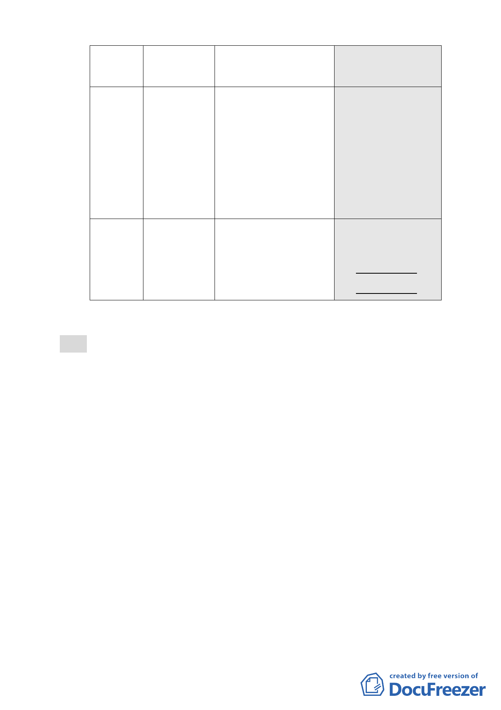

項目
現行計畫
（92.1.7）
公展計畫
（98.12.22）
本次修正內容
（99.6.17）
建築物高
度
不超過 30 公尺
為原則，有條
件放寬至 40 公
尺。
●以不超過 90 公尺為原 ●建築物高度不得超
則，有條件放寬高度， 過 90 公尺。
惟不得超過 100 公尺， ●訂定生態軸帶視景
經 審 議 未 符 合 規 定 高度比之規定。
者，建築物高度不得超
過 80 公尺。
●訂定生態軸帶視景高
度比之規定。
臺北好好
看獎勵項
目
無
申請適用 3 項容積獎勵
●廣場式開放空間
●觀景平台
申請適用
●廣場式開放空間
●地面人行通道
●挑空室內開放空間
●立體人行通道
五、公民或團體陳情意見計 5 件（如後附綜理表）。
決議：
一、本案有關建築物高度管制規定，依本會第 612 次委員會議決
議「建築高度 70 公尺（上限）、視覺廊道 40 公尺（下限）」
辦理。
二、本案同意申請「廣場式開放空間」、「地面人行通道」以及
「立體人行通道」三項獎勵，修正後計畫書第 10 頁二、其他，
文字請刪除「（如附件一）」，並增列「實際容積獎勵額度，
由臺北市都市設計及土地使用開發許可審議委員會依本案所
規劃之開放空間，審酌其必要性、開放性及公益性，就實際
面積再核予容積獎勵額度」。
三、其他文字修正：
（一）本案有關土地及建物使用管制，依本會第 611 次委員會議
決議，應依照現行計畫規定辦理（92.1.7.公告實施之計
畫）。本次所送修正後計畫書第 5 頁（五）文字有關「新
計畫」1 欄內容所敘及「原計畫允許使用之容積樓地板應達
1/2 以上…」，將造成計畫文字解讀錯誤，不符合本會通過
之共識，文字直接修正為「有關土地及建物使用管制，依
-8-